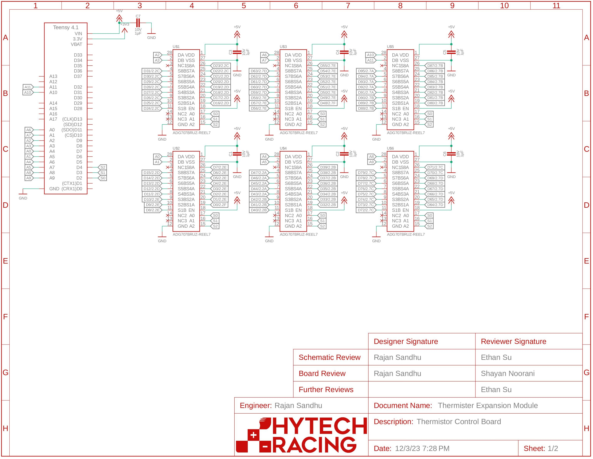
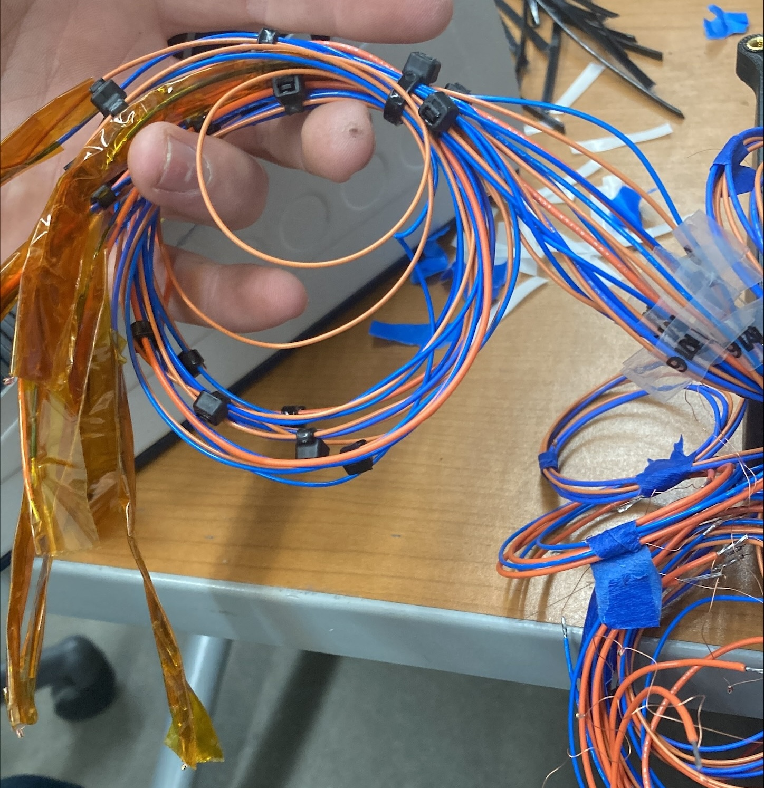
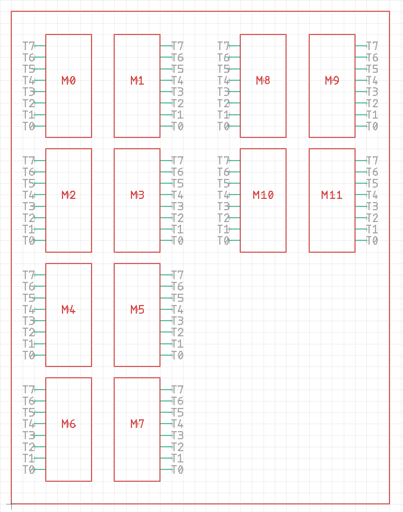
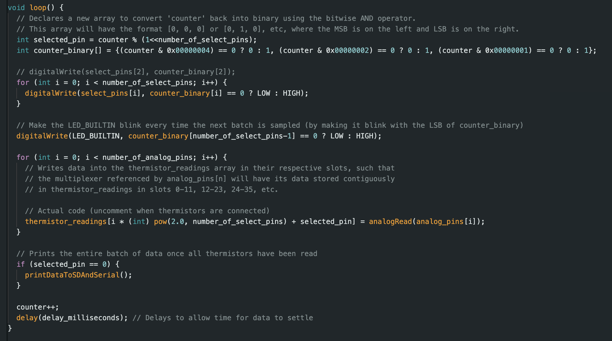
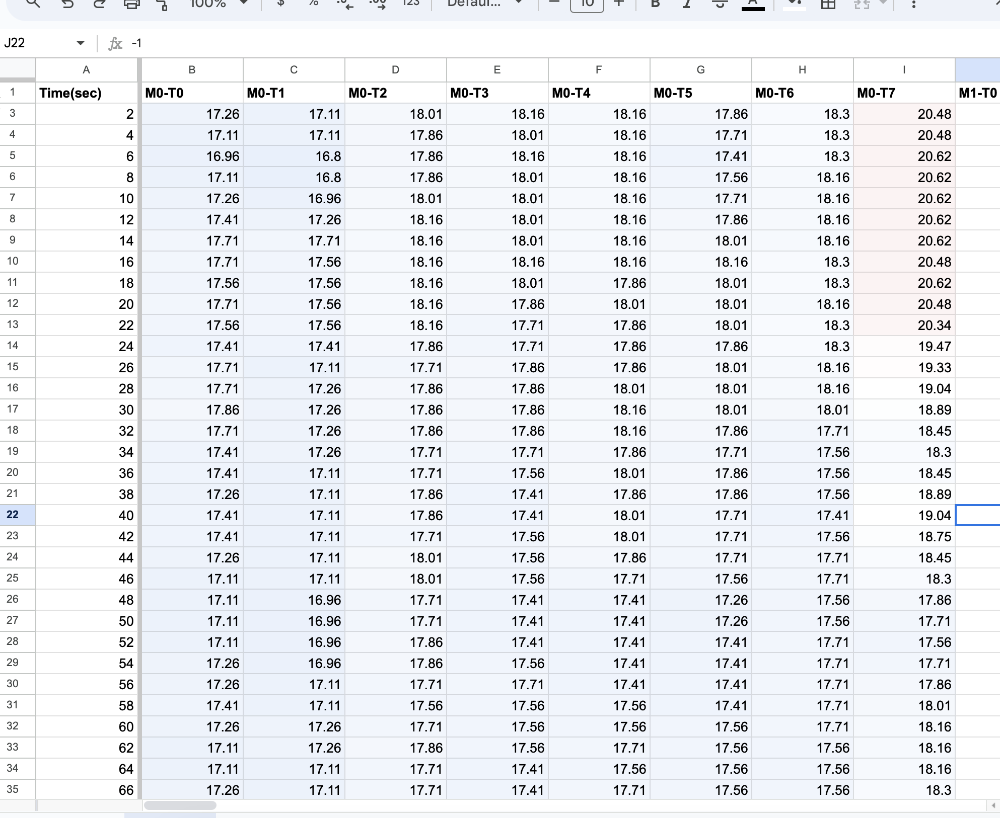
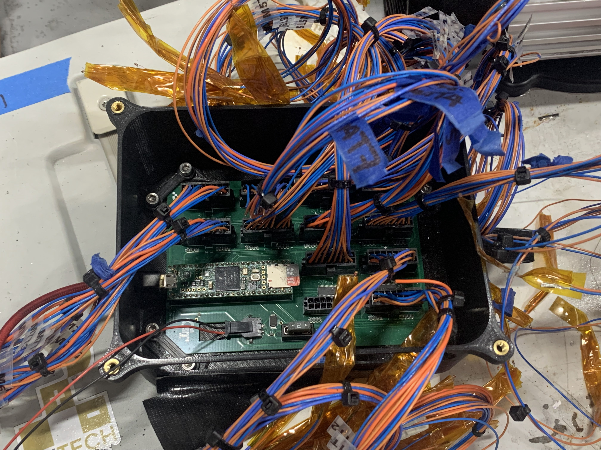

Thermistor Board Project (Hytech Racing)
Table of Contents
Overview
For Hytech, we needed an array of thermistors to measure temperature data at many different points. Initially, this was designed to measure data in an array between two large aluminum plates to to verify their thermal properties. We could not simply use a thermal camera, since this we needed to measure data between solid plates.
Requirements
In order for our solution to be viable, we needed to meet the following criteria.
- Record temperature data at >60 locations. (One thermistor every 2 square inches on a 9" x 13" plate)
- Record temperature data for at least 30 minutes.
- Save data to a CSV file for later analysis.
Design
We decided to use an Arduino Teensy 4.1 with analog multiplexers to record the data. Since the Arduino does not have sufficient analog pins for our 60+ thermistors, we instead connect the Teensy to several 8x1 MUXs. We designed our board to record data from 96 thermistors and record it in a Micro-SD card on the Teensy.
We used Autodesk EAGLE to design the a PCB. We had six MUXes (each with two 8x1 sides) connected to the Teensy.

Figure 1: EAGLE Board Diagram. PDF can be found here
Building & Coding
After ordering the board, we had to solder each of the thermistor wires to blue/orange wires, Molex crimp the other ends of the wires, and then connect them to 16-pin Molex connectors. We needed to use Kapton tape to insulate the leads on each thermistor.

Figure 2: Soldered, crimped, insulated, labeled bundle of 8 thermistors

Figure 3: Thermistor naming diagram to organize data
After connecting each bundle to the board, we wrote Arduino code to select each pin, print the data on the Serial monitor.

Figure 4: Excert of main loop() function. Full code can be found here
Initially, we wrote a python script to read the data from the Serial monitor and save it to a CSV on the computer while it is plugged in. However, since the test needed to run for an extended period of time, we decided that it would be better if the Teensy could save the data without a computer being plugged in, so we saved the data locally to a micro SD card.
Since it was saved as a CSV, we could analyze the data in a spreadsheet.

Figure 5: Thermistor data logged in a spreadsheet with slight conditional formatting.
Unfortunately, the project was not completed before the manufacturing team needed to fabricate the aluminum plate, so we were not able to use the board for its original purpose. However, it is currently being used to test battery segments, and is reportedly working flawlessly.

Figure 6: Completed thermistor board
Reflection
Overall, this was a really helful project. By working on this board, I learned several electrical engineering fundamentals, including:
- Converting an analog signal into a temperature (in degrees) using thermistor datasheet
- PCB design in EAGLE
- Through-hole soldering
- Molex crimps
- Reading from Arduino Serial monitor with a Python script
- Writing to a Micro-SD on the Teensy
However, there are several things I would change if I did this project again.
- Plan out wire lengths and routing ahead of time. Since we have 80+ resistors with 2 wires each, they get tangled extremely easily, and the final product looks messy. Some of our thermistors became so entangled that it took us several hours to reorganize them all. This was an extremely tedious process, and used a significant amount of expensive Kapton tape to insulate the ends of the wires.
- Calibrate each thermistor individually. In our final data, each thermistor gave data that varied by up to 2-3 degrees celsius. For our application, that was sufficiently accurate, but that is still a fairly large tolerance for error. When discussing this with the Electrical lead, he recommended adding an offset to each thermistor to minimize variance.
- Hard-code more constants. I began working on code before we had finalized the total number of thermistors and the size of each multiplexer. As a result, I wrote more "general" code that could adjust if fewer pins were connected. This was functional, but makes the codebase slightly more difficult to modify and maintain.